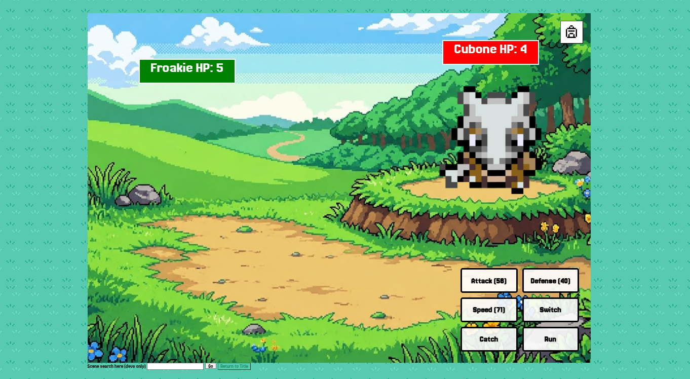

Pokemon Adventure Project

This project involved creating an interactive Pokemon-inspired adventure using HTML, CSS, and Javascript. The game followed the structure of the 12-step Monomyth (Hero’s Journey) while allowing players to interact with dialogue, battle/catch Pokemon, and progress through branching story paths.
Tools Used
- Github - commit code progress daily
- Javascript - programmed game logic, active scenes, and character interaction
- Figma - wireframes and design
- ChatGPT - used for background image generating
Experience
This project was one of the most challenging yet rewarding programming experiences I have worked on this year. Before starting this project, I had very limited experience with javascript and game logic systems. Through my progress of development, my partner and I learned many coding concepts while actively building the story game. Working on this project gave me a lot of hands on experience with:
- Collaborative development using Github
- Debugging Javascript systems
- Organizing large amounts of data
- Creating branching story paths
- Managing inventory and battle mechanics
This experience also helped me become more confident in solving coding problems. Instead of giving up when errors appear, I learned how to research solutions, test different ideas, and review my code until the mechanics functioned correctly.

Challenges
TOne of the biggest challenges during development was handling a GitHub merge conflict between me and my partner. Although we originally divided tasks to avoid interfering with each other’s work, a merge conflict caused a large portion of our progress to disappear. To resolve this issue, I revisited my commit history and restored portions of lost code. Although, not all the lines of code we added were recovered. This experience taught me the importance of communication, organization, and version control between collaborative environments. Another challenge involved programming the opponent battle system. I struggled making the enemy’s pokemon take turns once they fainted. Since javascript was still to me, debugging this mechanic became difficult and time-consuming. After researching and experimenting with different outcomes, I redesigned the opponent system using Javascript objects and functions similar to wild battle encounters. This process helped me better understand how large systems work together in programming.
Habits of Mind
- Persistence - continued debugging difficult Javascript mechanics and battle systems
- Collaboration - worked closely with a partner while sharing coding and design responsibilities
- Problem Solving - restored lost progress after merge conflicts and redesigned battle systems for better solutions
- Communication - added comments throughout the code to give a vague explanation with functions and mechanics
Outcome & Reflecting
This project became one of the biggest technical learning experiences I’ve had in my first CART year. Although my partner and I were not highly experienced with javascript at the beginning, we continued learning throughout development instead of simplifying the project One of my biggest accomplishments was successfully expanding the game by adding over fifteen pokemon after receiving feedback from the Game Design Lab students. Originally, I didn't think there was enough time to add additional characters, however I was able to continue improving the game before the deadline. Looking back, this project helped me grow a lot in programming, collaboration, and debugging. It taught me how important it is to problem solve during developments, especially when working with complex coding concepts. If I were to be given more time, I would continue adding more story progression, improve character interactions, and polish visual pictures to make the game feel more complete and professional.
You’ve reached the bottom! This is all I have for now. If you have any questions feel free to ask me!
 nylia.vang1@gmail.com
nylia.vang1@gmail.com